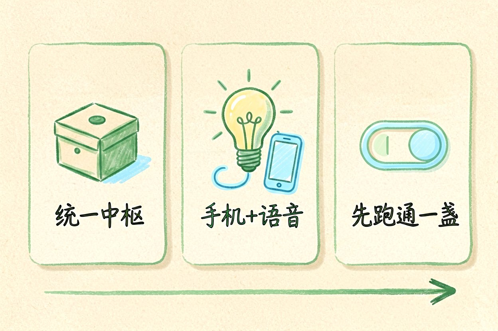
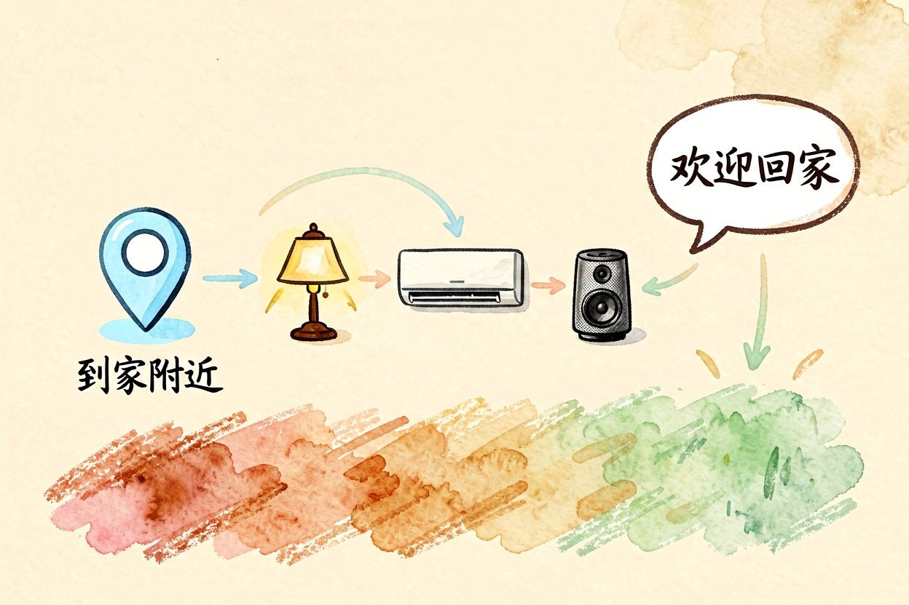
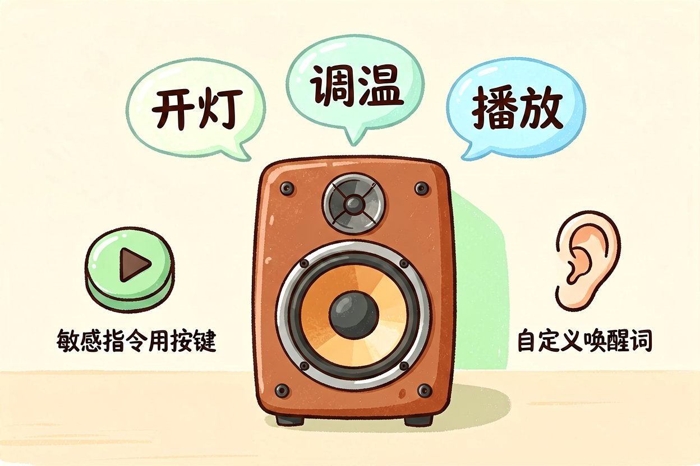
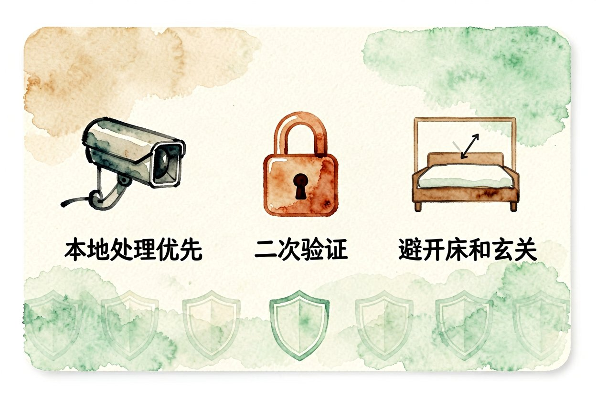
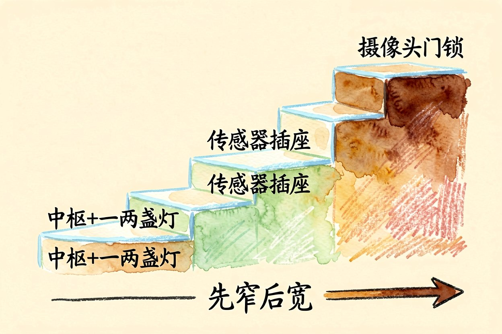
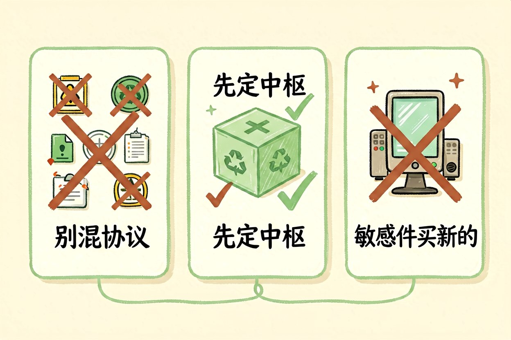
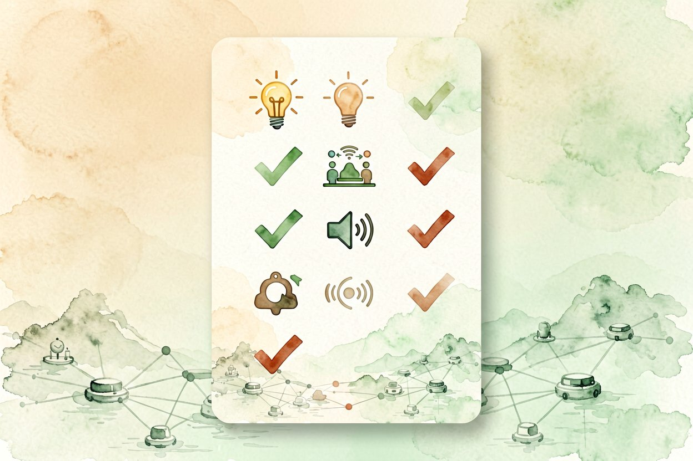

智能家居搭建入门：从一句话控灯开始
想让家里的灯、音箱和摄像头听你一句话？智能家居搭建没那么贵，从这步开始。
智能家居搭建的第一步，不是买一屋子设备，而是先让一盏灯听你话。跑通最小闭环，再慢慢加，比一次囤货更稳，也不容易吃灰。下面给一条低门槛、可扩展的路线，新手照着走不容易踩坑，钱也花在刀刃上，而不是交学费。
智能家居搭建从灯光控制起

灯是最高频、最低风险的控制对象。选支持统一协议的灯泡，用一个小中枢接管，手机和语音都能控。先别碰门锁、燃气阀这类高后果设备，容错空间小。灯控跑顺了，你对整个系统的脾气就摸熟了，再加设备不慌。一个中枢管全屋，比各品牌各 App 省心太多，也不会出现"开个灯要切三个软件"的尴尬。
加一个"回家模式"

灯、空调、音箱连成场景，比单控舒服得多。下面是一段触发逻辑，定位到家附近就自动跑：
def on_arrive():
light.turn_on("客厅")
ac.set(26)
speaker.say("欢迎回家")回家模式是最容易上瘾的入口，一旦用过就回不去手动开关了。还能加"离家模式"反向关设备，省电也安心，两个场景配对用最划算。场景之间是叠加不是互斥，想多细就多细，先从这两个最常用的入手。
语音入口选顺手的

中文指令多，选中文理解好的音箱省心。但别把敏感指令都交语音，孩子在场或邻居能听到时，按键更稳妥。语音方便，但隐私边界要自己划，别图省事把什么都喊出来。给音箱起个不常见的唤醒词，也能挡掉误唤醒的尴尬，半夜被自己说话吵醒最败好感。
隐私别省这一步

摄像头、麦克风都在家，数据放哪很关键。能用本地处理的就别全传云，账号开二次验证。智能家居搭建的终点不是多智能，而是你睡得着。云方案再方便，也抵不过摄像头被蹭看的夜不能寐。摄像头别对着床和玄关内侧，角度一偏隐私就没了。麦克风设备不用时断电，比软件开关实在。二手设备记得恢复出厂并改密码，别接别人留的账号。
预算怎么分配最稳

先花小钱把中枢和一两盏灯搞定，跑通再扩。别一上来买全屋套装，半途发现不兼容最烧钱。传感器、插座这类便宜件可以多点，摄像头、门锁这种高敏感件少而精。预算有限时把中枢买好，周边慢慢补，体验反而更连贯。我家第一套就栽在混协议上，三个 App 互不认，最后全退了重买统一中枢，钱和耐心都交了学费。先窄后宽，是智能家居搭建最省钱的节奏。
新手别踩的坑

别追新买一堆不同协议的设备，互相不认最闹心。先定一个中枢，智能家居搭建围绕它扩，兼容性最省心。买之前先查它能不能接你定的中枢，这一步能省下大半退货的功夫。二手灯和传感器比二手摄像头安全，后者务必买新的并改密码，别贪便宜留后门。协议统一了，后面加什么设备都只是多一个节点，不费脑。

本文信息核对于 2026-08-31。AI 产品的价格、免费额度与功能变动频繁，实际以各工具官网当前说明为准。